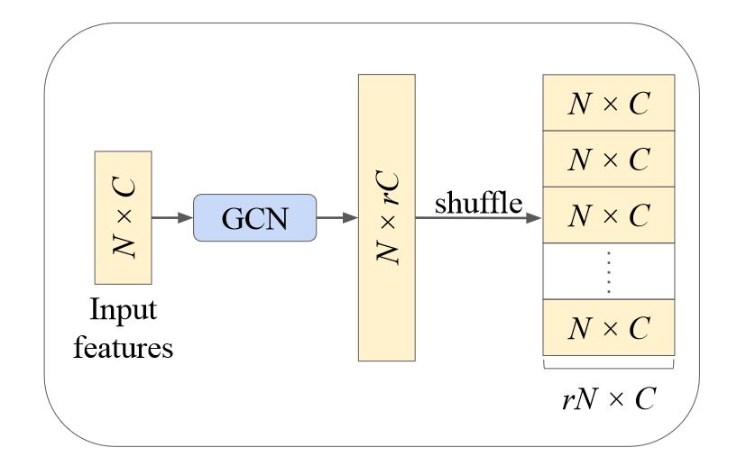
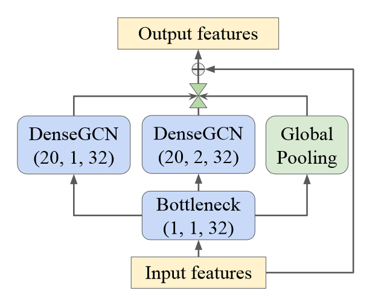

论文：PU-GCN: Point Cloud Upsampling using Graph Convolutional Networks
代码：PU-GCN: Point Cloud Upsampling using Graph Convolutional Networks (github.com)
方法
上采样方法
在此之前，PU-Net 使用并联的两层 MLP 扩展特征，MPU 对拼接了一维张量的特征向量使用共享 MLP 回归残差坐标，AR-GCN 直接将特征重塑成坐标的维数然后展开。PU-GCN 受图像超分辨率中 PixelShuffle 的启发，提出 NodeShuffle 来有效地对点云进行上采样。
PixelShuffle 是插值、转置卷积之外的一种流行的上采样方式。对于尺寸为 $C\times H\times W$ 的图像，通过可学习参数将特征重塑为 $C r^2\times H\times W$ ，然后按照顺序排布，得到 $C\times Hr \times Wr$ ，即实现了上采样。下图给出了一个 $3$ 倍上采样的示意图，可以看到最后的高分辨率图中每个九宫格都是一样的顺序排布，也即所谓的 “周期性” 洗牌。

我们很容易就可以建立下标之间的对应关系：
而对于点云来说，这一操作更加简单。NodeShuffle 操作可以分为两个步骤。
- 通道扩展：使用 1 层 GCN 使用可学习参数 $\mathcal{W}_{l+1}$ 和 $b_{l+1}$ 将节点特征 $\mathcal{V}_l$ 扩展为 $N × rC$ 的尺寸。
- 周期性改组：重新排列通道扩展的输出以形成 $rN × C$ 。
与多分支 MLP 或基于重复的上采样相比，NodeShuffle 利用图卷积而不是 CNN。尽管 GCN 是特征提取的常见模块，但 PU-GCN 第一次将其用于点云上采样。论文认为上采样的关键是对来自点邻域的空间信息进行编码，并从潜在空间中学习新点。

NodeShuffle 和 AR-GCN 中的反池化块在思路上几乎是一样的，区别在于 NodeShuffle 返回了特征，而 AR-GCN 中返回坐标残差，并用插值得到对应点特征。而且 NodeShuffle 返回的特征实际上仍然是一个图，可以进行更多的处理。
NodeShuffle 的设计方式使其更通用，能够植入到任意的上采样框架中。看来细微的设计差异也能带来很大的不同啊。
多尺度特征
为了对点云的多尺度性质进行编码，论文提出了一种新的 Inception DenseGCN 特征提取器，它将 DeepGCNs 中的密集连接 GCN 模块(DenseGCN) 有效地集成到 GoogLeNet 中的 Inception 模块中。

GoogLeNet 中的 Inception 模块的主要思想是通过多个并行的不同大小的卷积核以及池化层来处理图像，并将特征连接。事实证明，残差连接和密集连接对于提高点云处理性能非常有用。在这里，论文更多采用密集连接而非残差连接，因为前者利用了先前层的特征以及不同的 Inception 路径。
结论
主要的思路和方法就是以上这些，论文原文讲得非常详细。总得来说，PU-GCN 很好地在上采样过程中结合了 GAN 的思路，因此对于未见过的数据集有更强的泛化能力，能够生成细节更丰富的结果。并且通过回归坐标残差来提升收敛速度和稳定性，通过渐进式上采样取得更优的效果。